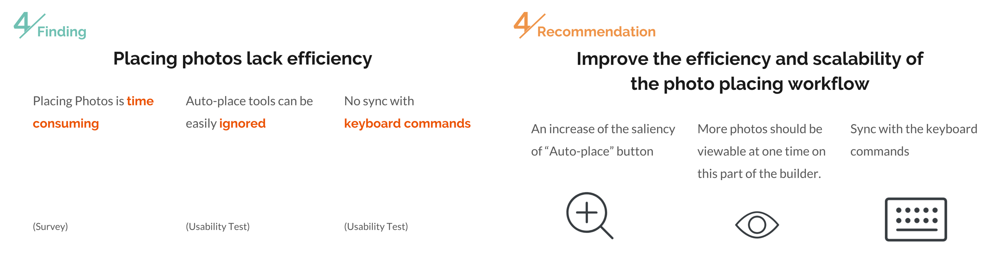

Clinic for Collage was a design consulting case I completed with Gillian Goldblatt, Linying Xie, Duo Yang during SI 622 course at Umich. As a team, we looked into the user experience of Collage.com and conducted research process to offer recommendations. My role in the team is user experience researcher.
As a team, we have been working with our client, Collage.com for a whole semester, in order to evaluate any potential weakness in their webpage. By going through this process that has included, user interviews, surveys, comparative analyses, Heuristic Evaluation, and usability tests, we hope that we can help increase the user friendliness of their website.
Conclusion Video
If you don't want to read the long long story, watch the final video is a good choice :)(on youtube)
What's Collage.com?
Collage.com is a design-it-yourself website, where users can pick a variety of products - such as mugs, photobooks, and t-shirts - and print their own pictures and designs on them. They can add different stylistic elements as well, like text and borders.
Current site map
Need Assessment
User Interview
Our first evaluation that we conducted was a series of interviews with individuals, three of whom fit the profile we established with our Collage.com contact, and two individuals who have previously used Collage.com. Our goal from the interviews was to look into individuals’ perspective on design-it-yourself websites in general and how they generally navigate those sites.
Persona
From our interviews and the demographic data received from Collage.com, we constructed three personas of potential Collage.com customers: A 40 year old married Head Librarian named Eliza, a 35 year old married housewife named Annie, and a single 28 year old Interior Designer named Angela. With each persona we created a bio, goals and frustrations regarding the design-it-yourself site they are using, and a scenario. From this we were able to examine the potential facets about how these users would interact with Collage.com to make their products.
Comparative Evaluation
Next we conducted a Comparative Evaluation to see how the competition to Collage.com was designing their user experience to try to bring in the same customers. By looking at what they’re doing to make the experience easier, said methods can help give Collage.com an edge. We picked a variety of types of competitors to evaluate.
Direct Competitors were competitors that offer the same design services as Collage.com. Partial competitors offer some of the same services, but not all of them. Parallel competitors offer a few of the services, but is is not their main function as a business. And Analogous do not offer the same services, but have features that may offer insight into bettering Collage.com’s own services.
Online Survey
We also completed a survey among potential users of Collage.com, and current users. We received 34 responses in total, getting approximately half non-users and half users. With the survey, our intention was not only to continue to develop our understanding of the demographic of Collage.com, but also to see user opinion of the fine functions of the site, and non-users’ opinions of other design-it-yourself websites they’ve used, and what they liked or disliked about the process.
Usability Evaluation
Heuristic Evaluation
In this part, we did heuristic evaluation first, where our team itself would each do a in-depth walk through of Collage.com, evaluating certain processes by a list of different heuristics, such as: Consistency, Navigation, Prevention and Recovery, and Efficiency and Flexibility. This was to further evaluate the user friendliness, and fluidity of the site.
Usability Test
Finally, we held several usability tests of Collage.com, where we gave users five tasks that we felt allowed them to utilize quite a few aspects of the site. Four users were female, with one male. Three of the users were above the age of 30, with two being in their early 20s, and none of them were prior Collage.com users. We felt that this test would be more informational regarding exactly how users interact with the site since we would be able to observe them navigating it to complete their tasks.
Findings and Recommendations
From all of these tests and evaluations, we were able to form a group of key findings and recommendations that we have for Collage.com to make their user experience more enjoyable for their users.
Findings and Recommendations 1
Our first finding regarding navigation, concerns the navigation bar. Through our Comparative Analyses as well as our Usability tests, we found that Collage.com often uses vague words in their navigation bar that does not immediately convey what the item exactly means, such as the word “project”. On other sites that we compared, use of clearer words on the navigation bar seems to make it easier to use.
Our recommendation for this finding, is that Collage.com should show by example in navigation. They should use clearer terms in the navigation bar, so instead of the more nebulous “Project” they could use something like “Start Designing your Gift” or “Your Started Products”.
Findings and Recommendations 2
Our second finding is about the problems regarding the navigation flow, through our Heuristic Analyses and our Usability tests, we found that both ourselves as testers, and the users, were flummoxed by some unexpected pages that cropped up when attempting to get back to a previous page we were on. In-site back or cancel buttons did not immediately lead back to the previous page, and often led the user to the ‘projects’ page.
Our recommendation for those findings, is that there needs to be more consistency and efficiency on Collage.com. Consistency in terms that the workflow of the site needs to be a more consistent layout across the two different avenues that can be taken to choose a product. The fact that they are radically different does not help the flow of the website and instead creates two distinct experiences. And then for efficiency, we recommend that Collage.com add a search bar to their main home page. And that they should match the space with the content that they intend to display, to allow for further details, preview pictures, and other information rather than requiring scrolling down due to the side bar.
Findings and Recommendations 3
Our third finding here is regarding how users upload photos. Across our interviews and several usability tests, we have found that users have some frustration regarding uploading photos - especially from another device. They find the process not very intuitive, and often difficult to find in the first place. This leads users to become frustrated.
Our recommendation for this finding is that the photo upload options primarily be re-organized. We find that using a tab navigation, even category headings in a list view as seen here would help users be able to find what they are looking for more easily. Make sure that the options users happen to use more, and at the top.
Findings and Recommendations 4
Our next finding is regarding the placing of photos. From both our survey and usability test, we found that the users spend an inordinate amount of time designing their project, primarily spent in the builder doing the photos. In our test, every user had a little bit of trouble placing photos during a task, they found the process of placing photos to be a bit arduous and tedious. The option for auto-placing, which would have aided them was unseen by all users. We also found that in the test, several users still attempted to use keyboard commands - like delete or copy - for photos in the builder.
Our corresponding recommendation is to improve the efficiency and scalability of the photo placing workflow. When a user goes in to make their product in the builder, all their options should be available to them outright, such as having the ‘auto-place’ button more prominently on the page, as well as allowing the chosen photos more easily viewable. We also believe that allowing the keyboard commands to be synced with the builder would be helpful for users.

Findings and Recommendations 5
Our final finding is regarding the fact that some Builder tools are no comprehensible. During our Heuristic Analysis, all of us as testers were confused by several of the tools that were available to use in the Builder. An example of this would be in “Pop Out”, “Pop In”, and “Bring Up”. Another tool we were confused about was the use of the “Shape” tool, which all of us initially believed was a different function than what it turned out to be.
Our fifth recommendation is that there should be more extensive tutorial within the Builder that users can easily access. They should be able to get to the tutorial they need within the Builder, instead of having to go outside of it for some written instructions. It would also be helpful to offer an on-boarding guide to all users that haven’t used the site before for the Builder. Finally, Collage.com should clarify the functions of the Builder so they are comprehensible to all users from the beginning.
Discussion and Reflection
Our primary shortcoming regarding our research as a whole, was the time constraint we were under for each assignment. Most assignments were due one week after the previous assignment, limiting our abilities to do more in-depth research, as well as examination.
Due to the strict deadlines we were under, we were not able to properly examine the use of the mobile version of Collage.com despite our contacts at Collage.com requesting this be an item we look into. Future examinations of Collage.com will definitely want to look into the usability of the mobile version
Als we used mostly a convenience sample when we were doing our interviews, as well as our usability test, we lacked the proper time to do extensive recruiting of viable candidates and previous users. We’d recommend that our information from our Usability test and Interviews be taken as a jumping off point for a more intensive interview process that can be undertaken with more time and funding.
We hope that our findings and recommendations can be useful to Collage.com in their mission to make a better experience for their users